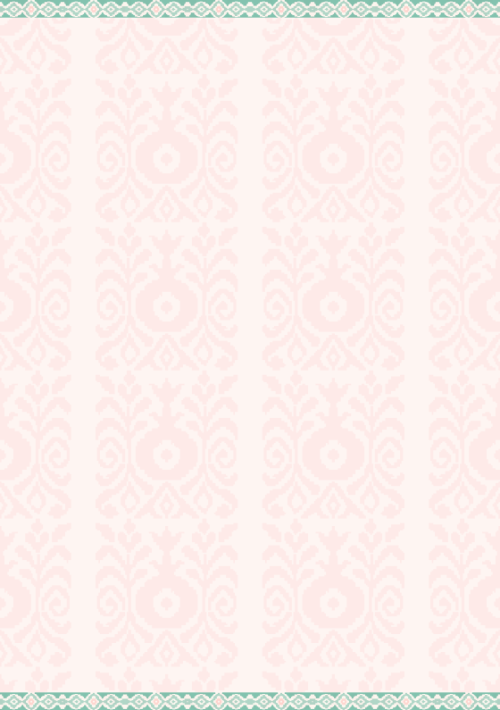

CONTENTS
INTRODUCTION
CONTENTS
PATTERN ARCHIVE
01 / History & Making
8–19
02 / Geometry & Repeat
20–41
03 / Plants & Growth
42–63
04 / Scrolls & Objects
64–85
05 / Complex Cuts
86–109
06 / Layered Collage
110–127
MAKING PROCESS
AFTERWORD
ACKNOWLEDGEMENTS
Print pages
Current page
Current spread
Page range
From
to
Whole book
Cancel
Print selected pages

BLURRED EDGES
ATLAS SILK MOTIF PAPER-CUT DESIGN
←
001
/ 136
GO TO
→
CONTENTS
THUMBNAILS
⛶
PRINT
← → TURN PAGES
中文版
ENGLISH